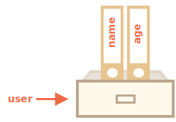

正如我们在 info:types 一章学到的，JavaScript 中有八种数据类型。有七种原始类型，因为它们的值只包含一种东西（字符串，数字或者其他）。
相反，对象则用来存储键值对和更复杂的实体。在 JavaScript 中，对象几乎渗透到了这门编程语言的方方面面。所以，在我们深入理解这门语言之前，必须先理解对象。
我们可以通过使用带有可选 属性列表 的花括号 {…} 来创建对象。一个属性就是一个键值对（"key: value"），其中键（key）是一个字符串（也叫做属性名），值（value）可以是任何值。
我们可以把对象想象成一个带有签名文件的文件柜。每一条数据都基于键（key）存储在文件中。这样我们就可以很容易根据文件名（也就是“键”）查找文件或添加/删除文件了。
我们可以用下面两种语法中的任一种来创建一个空的对象（“空柜子”）：
let user = new Object(); // “构造函数” 的语法
let user = {}; // “字面量” 的语法通常，我们用花括号。这种方式我们叫做字面量。
我们可以在创建对象的时候，立即将一些属性以键值对的形式放到 {...} 中。
let user = { // 一个对象
name: "John", // 键 "name"，值 "John"
age: 30 // 键 "age"，值 30
};属性有键（或者也可以叫做“名字”或“标识符”），位于冒号 ":" 的前面，值在冒号的右边。
在 user 对象中，有两个属性：
"name"，值是 "John"。"age"，值是 30。生成的 user 对象可以被想象为一个放置着两个标记有 "name" 和 "age" 的文件的柜子。

我们可以随时添加、删除和读取文件。
可以使用点符号访问属性值：
// 读取文件的属性：
alert( user.name ); // John
alert( user.age ); // 30属性的值可以是任意类型，让我们加个布尔类型：
user.isAdmin = true;我们可以用 delete 操作符移除属性：
delete user.age;我们也可以用多字词语来作为属性名，但必须给它们加上引号：
let user = {
name: "John",
age: 30,
"likes birds": true // 多词属性名必须加引号
};列表中的最后一个属性应以逗号结尾：
let user = {
name: "John",
age: 30*!*,*/!*
}这叫做尾随（trailing）或悬挂（hanging）逗号。这样便于我们添加、删除和移动属性，因为所有的行都是相似的。
请注意：用 `const` 声明的对象 **能** 被修改。
例如：
```js run
const user = {
name: "John"
};
*!*
user.name = "Pete"; // (*)
*/!*
alert(user.name); // Pete
```
`(*)` 行似乎会触发一个错误，但实际并没有。`const` 声明仅固定了 `user` 的值，而不是值（该对象）里面的内容。
仅当我们尝试将 `user=...` 作为一个整体进行赋值时，`const` 会抛出错误。
有另一种将对象属性变为常量的方式，我们将在后面的 <info:property-descriptors> 一章中学习它。对于多词属性，点操作就不能用了：
// 这将提示有语法错误
user.likes birds = trueJavaScript 理解不了。它认为我们在处理 user.likes，然后在遇到意外的 birds 时给出了语法错误。
点符号要求 key 是有效的变量标识符。这意味着：不包含空格，不以数字开头，也不包含特殊字符（允许使用 $ 和 _）。
有另一种方法，就是使用方括号，可用于任何字符串：
let user = {};
// 设置
user["likes birds"] = true;
// 读取
alert(user["likes birds"]); // true
// 删除
delete user["likes birds"];现在一切都可行了。请注意方括号中的字符串要放在引号中，单引号或双引号都可以。
方括号同样提供了一种可以通过任意表达式来获取属性名的方法 —— 跟语义上的字符串不同 —— 比如像类似于下面的变量：
let key = "likes birds";
// 跟 user["likes birds"] = true; 一样
user[key] = true;在这里，变量 key 可以是程序运行时计算得到的，也可以是根据用户的输入得到的。然后我们可以用它来访问属性。这给了我们很大的灵活性。
例如：
let user = {
name: "John",
age: 30
};
let key = prompt("What do you want to know about the user?", "name");
// 访问变量
alert( user[key] ); // John（如果输入 "name"）点符号不能以类似的方式使用：
let user = {
name: "John",
age: 30
};
let key = "name";
alert( user.key ) // undefined当创建一个对象时，我们可以在对象字面量中使用方括号。这叫做 计算属性。
例如：
let fruit = prompt("Which fruit to buy?", "apple");
let bag = {
*!*
[fruit]: 5, // 属性名是从 fruit 变量中得到的
*/!*
};
alert( bag.apple ); // 5 如果 fruit="apple"计算属性的含义很简单：[fruit] 含义是属性名应该从 fruit 变量中获取。
所以，如果一个用户输入 "apple"，bag 将变为 {apple: 5}。
本质上，这跟下面的语法效果相同：
let fruit = prompt("Which fruit to buy?", "apple");
let bag = {};
// 从 fruit 变量中获取值
bag[fruit] = 5;……但是看起来更好。
我们可以在方括号中使用更复杂的表达式：
let fruit = 'apple';
let bag = {
[fruit + 'Computers']: 5 // bag.appleComputers = 5
};方括号比点符号更强大。它允许任何属性名和变量，但写起来也更加麻烦。
所以，大部分时间里，当属性名是已知且简单的时候，就使用点符号。如果我们需要一些更复杂的内容，那么就用方括号。
在实际开发中，我们通常用已存在的变量当做属性名。
例如：
function makeUser(name, age) {
return {
name: name,
age: age,
// ……其他的属性
};
}
let user = makeUser("John", 30);
alert(user.name); // John在上面的例子中，属性名跟变量名一样。这种通过变量生成属性的应用场景很常见，在这有一种特殊的 属性值缩写 方法，使属性名变得更短。
可以用 name 来代替 name:name 像下面那样：
function makeUser(name, age) {
*!*
return {
name, // 与 name: name 相同
age, // 与 age: age 相同
// ...
};
*/!*
}我们可以把属性名简写方式和正常方式混用：
let user = {
name, // 与 name:name 相同
age: 30
};我们已经知道，变量名不能是编程语言的某个保留字，如 "for"、"let"、"return" 等……
但对象的属性名并不受此限制：
// 这些属性都没问题
let obj = {
for: 1,
let: 2,
return: 3
};
alert( obj.for + obj.let + obj.return ); // 6简而言之，属性命名没有限制。属性名可以是任何字符串或者 symbol（一种特殊的标志符类型，将在后面介绍）。
其他类型会被自动地转换为字符串。
例如，当数字 0 被用作对象的属性的键时，会被转换为字符串 "0"：
let obj = {
0: "test" // 等同于 "0": "test"
};
// 都会输出相同的属性（数字 0 被转为字符串 "0"）
alert( obj["0"] ); // test
alert( obj[0] ); // test (相同的属性)这里有个小陷阱：一个名为 __proto__ 的属性。我们不能将它设置为一个非对象的值：
let obj = {};
obj.__proto__ = 5; // 分配一个数字
alert(obj.__proto__); // [object Object] — 值为对象，与预期结果不同我们从代码中可以看出来，把它赋值为 5 的操作被忽略了。
我们将在 后续章节 中学习 __proto__ 的特殊性质，并给出了 解决此问题的方法。
相比于其他语言，JavaScript 的对象有一个需要注意的特性：能够被访问任何属性。即使属性不存在也不会报错！
读取不存在的属性只会得到 undefined。所以我们可以很容易地判断一个属性是否存在：
let user = {};
alert( user.noSuchProperty === undefined ); // true 意思是没有这个属性这里还有一个特别的，检查属性是否存在的操作符 "in"。
语法是：
"key" in object例如：
let user = { name: "John", age: 30 };
alert( "age" in user ); // true，user.age 存在
alert( "blabla" in user ); // false，user.blabla 不存在。请注意，in 的左边必须是 属性名。通常是一个带引号的字符串。
如果我们省略引号，就意味着左边是一个变量，它应该包含要判断的实际属性名。例如：
let user = { age: 30 };
let key = "age";
alert( *!*key*/!* in user ); // true，属性 "age" 存在为何会有 in 运算符呢？与 undefined 进行比较来判断还不够吗？
确实，大部分情况下与 undefined 进行比较来判断就可以了。但有一个例外情况，这种比对方式会有问题，但 in 运算符的判断结果仍是对的。
那就是属性存在，但存储的值是 undefined 的时候：
let obj = {
test: undefined
};
alert( obj.test ); // 显示 undefined，所以属性不存在？
alert( "test" in obj ); // true，属性存在！在上面的代码中，属性 obj.test 事实上是存在的，所以 in 操作符检查通过。
这种情况很少发生，因为通常情况下不应该给对象赋值 undefined。我们通常会用 null 来表示未知的或者空的值。因此，in 运算符是代码中的特殊来宾。
为了遍历一个对象的所有键（key），可以使用一个特殊形式的循环：for..in。这跟我们在前面学到的 for(;;) 循环是完全不一样的东西。
语法：
for (key in object) {
// 对此对象属性中的每个键执行的代码
}例如，让我们列出 user 所有的属性：
let user = {
name: "John",
age: 30,
isAdmin: true
};
for (let key in user) {
// keys
alert( key ); // name, age, isAdmin
// 属性键的值
alert( user[key] ); // John, 30, true
}注意，所有的 "for" 结构体都允许我们在循环中定义变量，像这里的 let key。
同样，我们可以用其他属性名来替代 key。例如 "for(let prop in obj)" 也很常用。
对象有顺序吗？换句话说，如果我们遍历一个对象，我们获取属性的顺序是和属性添加时的顺序相同吗？这靠谱吗？
简短的回答是：“有特别的顺序”：整数属性会被进行排序，其他属性则按照创建的顺序显示。详情如下：
例如，让我们考虑一个带有电话号码的对象：
let codes = {
"49": "Germany",
"41": "Switzerland",
"44": "Great Britain",
// ..,
"1": "USA"
};
*!*
for(let code in codes) {
alert(code); // 1, 41, 44, 49
}
*/!*对象可用于面向用户的建议选项列表。如果我们的网站主要面向德国观众，那么我们可能希望 49 排在第一。
但如果我们执行代码，会看到完全不同的现象：
因为这些电话号码是整数，所以它们以升序排列。所以我们看到的是 1, 41, 44, 49。
这里的“整数属性”指的是一个可以在不做任何更改的情况下与一个整数进行相互转换的字符串。
所以，"49" 是一个整数属性名，因为我们把它转换成整数，再转换回来，它还是一样的。但是 "+49" 和 "1.2" 就不行了：
```js run
// Math.trunc 是内置的去除小数部分的方法。
alert( String(Math.trunc(Number("49"))) ); // "49"，相同，整数属性
alert( String(Math.trunc(Number("+49"))) ); // "49"，不同于 "+49" ⇒ 不是整数属性
alert( String(Math.trunc(Number("1.2"))) ); // "1"，不同于 "1.2" ⇒ 不是整数属性
```……此外，如果属性名不是整数，那它们就按照创建时的顺序来排序，例如：
let user = {
name: "John",
surname: "Smith"
};
user.age = 25; // 增加一个
*!*
// 非整数属性是按照创建的顺序来排列的
*/!*
for (let prop in user) {
alert( prop ); // name, surname, age
}所以，为了解决电话号码的问题，我们可以使用非整数属性名来 欺骗 程序。只需要给每个键名加一个加号 "+" 前缀就行了。
像这样：
let codes = {
"+49": "Germany",
"+41": "Switzerland",
"+44": "Great Britain",
// ..,
"+1": "USA"
};
for (let code in codes) {
alert( +code ); // 49, 41, 44, 1
}现在跟预想的一样了。
对象是具有一些特殊特性的关联数组。
它们存储属性（键值对），其中：
我们可以用下面的方法访问属性：
obj.property。obj["property"]，方括号允许从变量中获取键，例如 obj[varWithKey]。其他操作：
delete obj.prop。"key" in obj。for(let key in obj) 循环。我们在这一章学习的叫做“普通对象（plain object）”，或者就叫对象。
JavaScript 中还有很多其他类型的对象：
Array 用于存储有序数据集合，Date 用于存储时间日期，Error 用于存储错误信息。它们有着各自特别的特性，我们将在后面学习到。有时候大家会说“Array 类型”或“Date 类型”，但其实它们并不是自身所属的类型，而是属于一个对象类型即 "object"。它们以不同的方式对 "object" 做了一些扩展。
JavaScript 中的对象非常强大。这里我们只接触了其冰山一角。在后面的章节中，我们将频繁使用对象进行编程，并学习更多关于对象的知识。